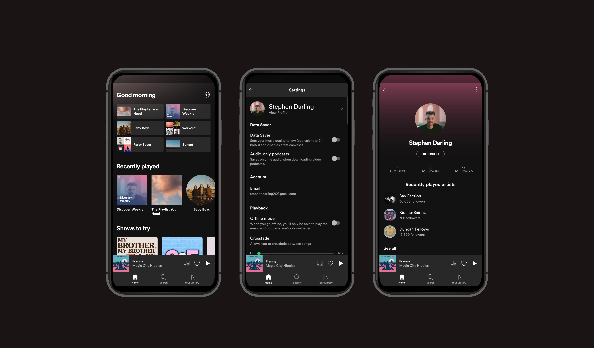
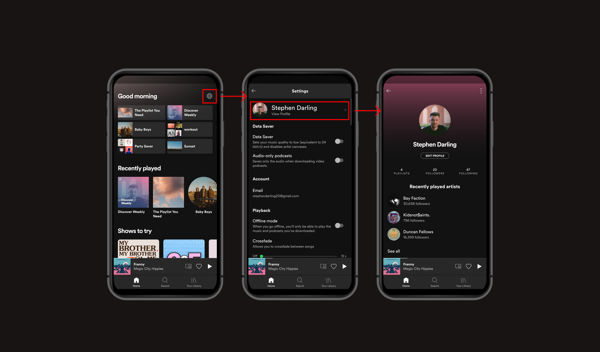
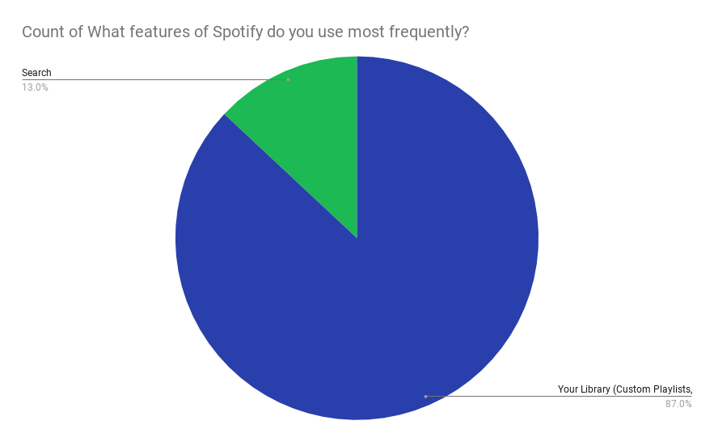
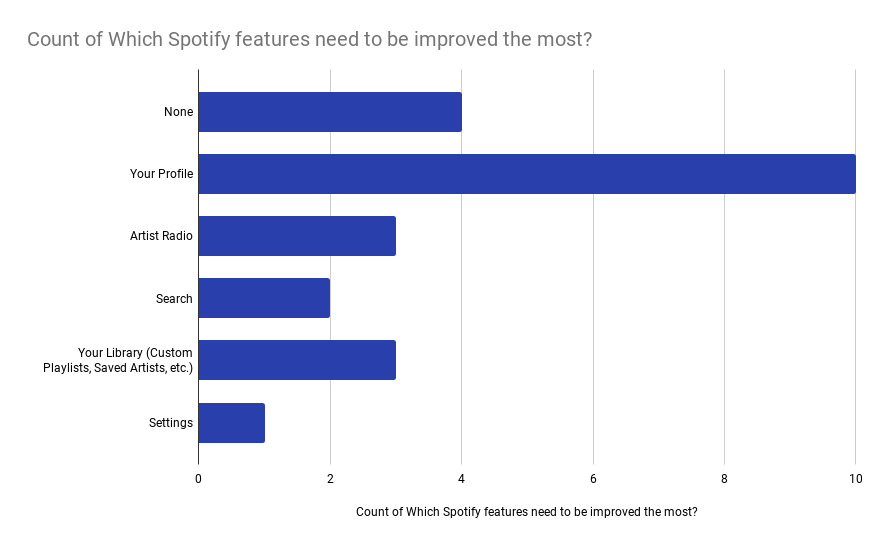
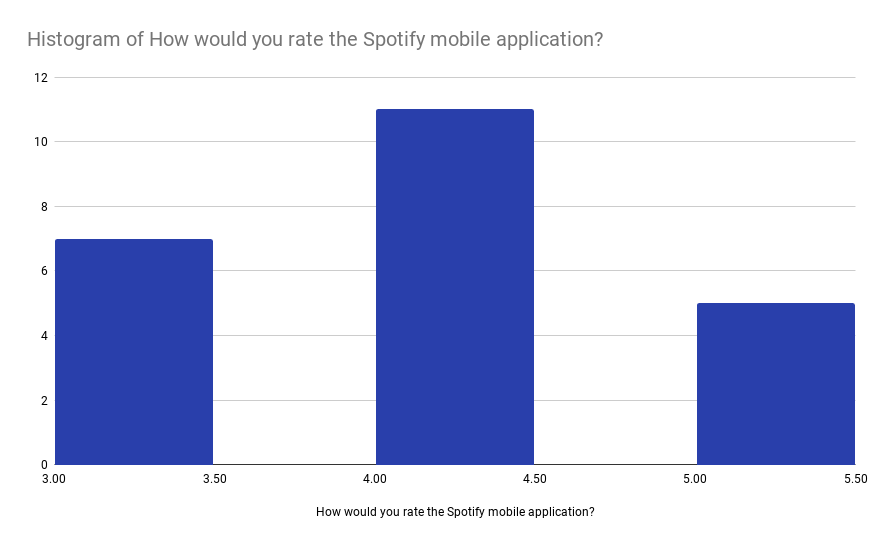
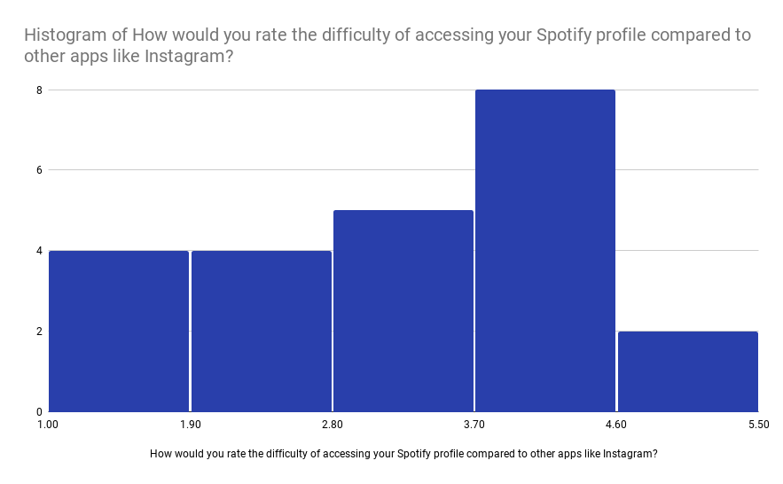
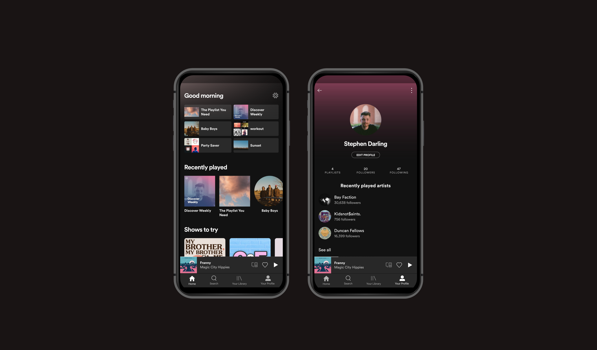

Spotify App Flow
by Stephen Darling
Spotify, one of the most popular music streaming applications, maintains a strong, easy-to-use design, and it effectively pushes new digital media to its users in an unobtrusive way. It is safe to say Spotify makes accessing one’s music an easy task to accomplish. However, some features, like accessing and interacting with one’s user profile, remain an unnecessarily difficult task.

App Analysis
The App
The Spotify mobile application leaves little to be desired within a music/podcast streaming application. The interface is clean, simple, has a wonderful hierarchy of information, and it never gets in the way of accessing one’s music. An unfortunate result of this is that features like the Profile, which arguably is a less important feature, gets lost in the design process.
The biggest issue with this is that the application everywhere else appears to be close to perfect. This small oversight really makes me question the motives behind it. In my opinion, this user experience flaw can and should be fixed, and it would be rather easy to do so.
The Challenge
I knew that I had issues with where Spotify buried the user Profile section on their mobile application, but I wanted to make sure others felt my pain. Understanding what kind of people used the Spotify application and what they had to say about the Profile section of Spotify became my primary challenge. Did other users ever access their profile? Did they care about the profile? Did they notice a difference compared to other applications like Instagram? All of these were questions I had to consider when understanding who used this application. Once that data was collected, I was able to focus on my main goal.
The Goal
My main goal became to slightly redesign the Spotify mobile application so that the user could access the Profile section in an easier way. I wanted to do with while also prioritizing Spotify’s simple design. If my design made users’ workflow more difficult, then it would be a failure. Additionally, if it began to clutter the application, it would also be a failure. I aimed for a simple solution to a simple problem.
Design Problem
Defining the Problem
To reach one’s profile in the Spotify mobile application, one must click the settings button, select the first option that says “View Profile”, and then they are able to view their profile. This is an issue for a few reasons (Note: the Profile section is different from the “Your Library” section):
- It is inconsistent with Spotify’s desktop application.
- In that application, one can see the option to access their profile at any point at the top.
- It hides the Profile section behind a misleading menu.
- Normally, users do not access their profile through a settings menu. It is either found in the main navigation menu (think Instagram) or it is found in a hamburger menu (think Facebook and Twitter).
- It does not take full advantage of the space in the main navigation menu.
- There are only three options in the navigation menu, meaning there is plenty of room to place the profile section in there.

This is the current workflow of navigation to the Profile section of the Spotify mobile application.
This is a highligthed version of the current workflow to access the Profile section of the application.
With this discovery and list of reasons this was a pain point, I wanted to see if others agreed with me. I knew I hated the way Spotify makes users access this seciton of the app, and so I needed confirmation that others found it difficult too.
Design Question
"How might we improve the experience of users accessing their Profile in the Spotify mobile application?"
The Users
Who They Are
They are users of the Spotify mobile application, and most of them happen to be students. I did not tell any of them what the App Redesign was about as to help get their honest opinions on the Profile section of the application.
Their Goals
- Accessing music
- Finding new music or artists
- Creating new ways to sort and store music (for example, Playlists)
- Adjusting the settings to meet specific needs
- Searching for the music/artists
Research Method
I created a Google Form and sent to a total of 66 people either personally or through group chats. 23 of the 66 people took and submitted the survery, which included the following questions:
- What features of Spotify do you use most frequently?
- Which Spotify features need to be improved the most?
- How would you rate the Spotify mobile application? (1 to 5 scale)
- How would you rate the difficulty of accessing your Spotify profile compared to other apps like Instagram? (1 to 5 scale)
With these questions, I wanted to prove my hypothesis that there was a pain point in accessing Spotify’s Profile section. Below are the results of this survey displayed through some graphs. I have noted my thought process of understanding how to improve the application to best suit its users.
Findings
None of the users surveryed listed that they use the Profile section of the application most frequently. This is understandable, but an important place to start when figuring out this pain point.
A large majority of users said the Profile section of the application needs improvement. This survey helped me fully understand that this was a pain point, thus proving my hypothesis.
I, too, wanted to survey how users thought about the application. I think Spotify's mobile application is one of the best apps I have on my phone, and as can be seen with this graph, I am not in the minority.
This final graph listend shows a wide variety of data. A majority of those surveryed, however, agree that there is difficulty in accessing Spotify's Profile section of the mobile application.
I even had my housemate try to access his Profile on Spotify and he could not get it on the first try because of unclear buttons and unclear workflows. This all proved to me that a pain point existed on this application, and luckily, I felt there was an easy fix to it.
The Solution
This leads us to the solution. I wanted to make a minor, yet important change to the workflow of accessing the Spotify's Profile section. This first started with using up the whitespace in the navigation bar. Additionally, I wanted to make sure the user knew exactly where to look for their Profile. This was mainly done through taking the Profile section out of a misleading menu, the Settings menu. Below is my change to the Spotfy mobile application. I used Adobe XD to created my new feature.
Here, the Profile section is in the main navigation bar. This allows the user to access it quickly, just like an application like Instagram, and it makes the workflow even easier to understand.
This is a highligthed version of the changes I made.
This simple change helps improve the workflow of navigating around the Spotify application. It helps the user not be confused by having a Profile section buried in a settings menu, and it helps keep consistency throughout the application. Additionally, I think it would help Spotify use more features the Profile section offers. As of now, the Profile section feels somewhat half-baked, which is unfortunate because I believe there is a ton of room for more features to be enhanced and added. It could help users connect with friends and start small networks where people can share and discover new music.
Final Thoughts
Thank you for reading this case study! I personally love Spotify’s mobile application, and so it was very fun to critique it in hopes to make it better. This project was a part of an App Flow Redeisgn assignment in my Interactive Design II course at James Madison University. If you have any feedback or questions, feel free to email me, contact me through my portfolio, or find me on LinkedIn (all links at the bottom of the page). Also, if you're interested, follow me on Spotify!